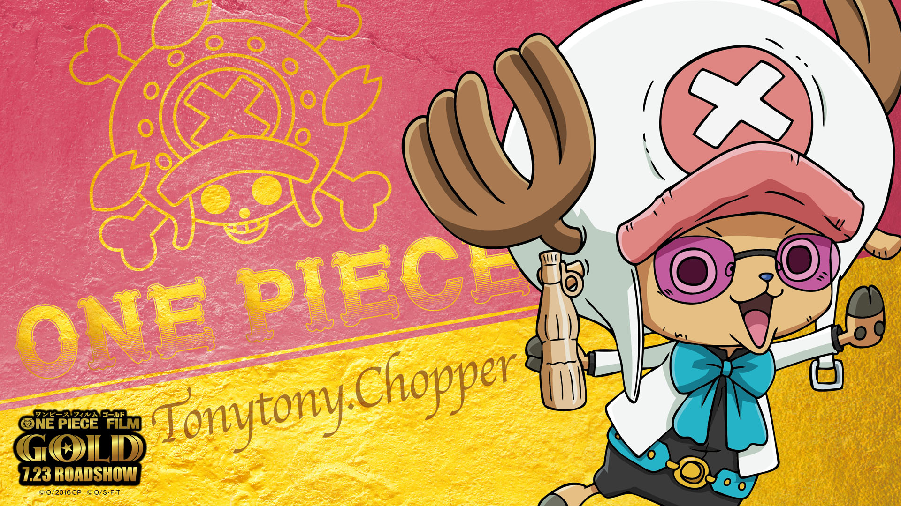
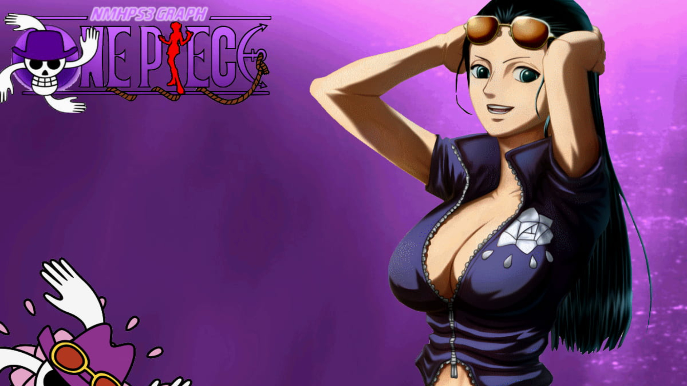
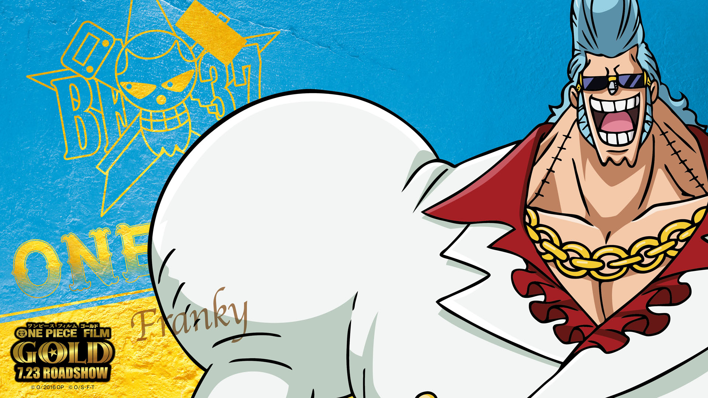
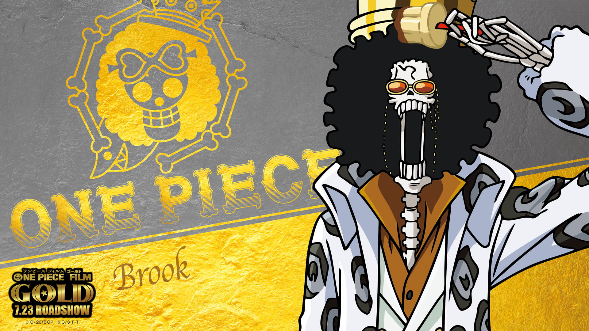
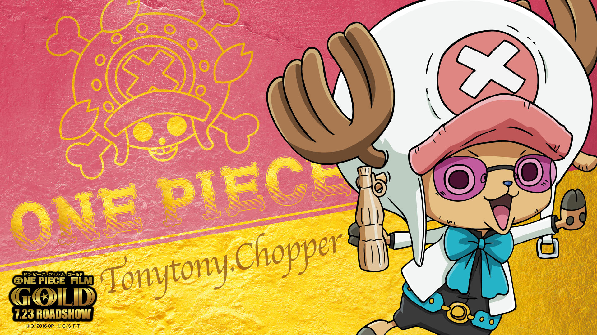
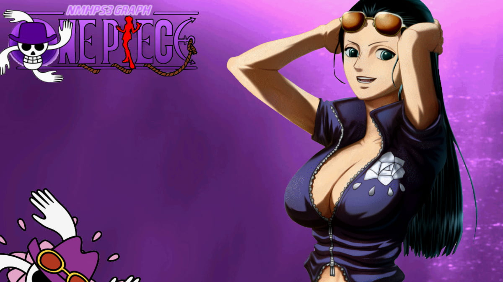
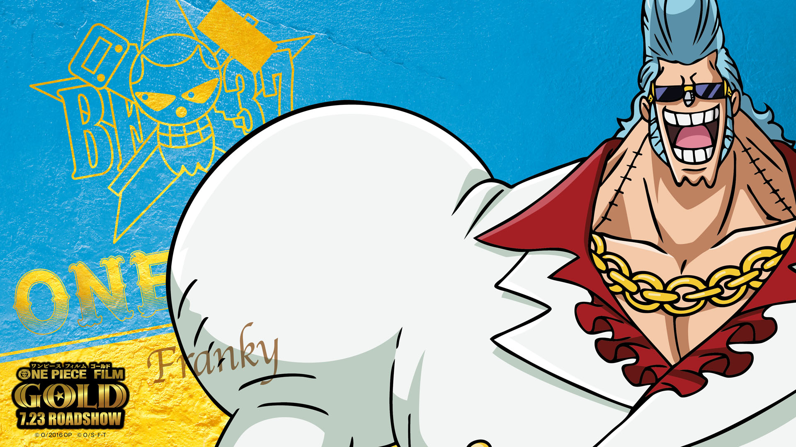
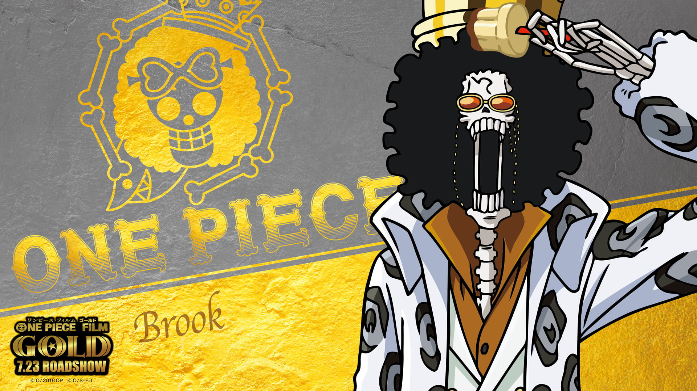

One Piece
Monkey D. Luffy, um jovem pirata com um sonho audacioso: encontrar o lendário tesouro conhecido como "One Piece" e se tornar o Rei dos Piratas. Após comer a Fruta do Diabo "Gomu Gomu no Mi", Luffy ganha habilidades elásticas, mas perde a capacidade de nadar. Ele forma uma tripulação diversa e carismática, conhecida como os "Piratas do Chapéu de Palha", cada membro com seus próprios sonhos e habilidades únicas.
Monkey D. Luffy
O capitão dos Piratas do Chapéu de Palha, Luffy é um jovem destemido e cheio de energia, com o sonho de se tornar o Rei dos Piratas. Ele possui o poder de esticar seu corpo como borracha graças à Fruta do Diabo "Gomu Gomu no Mi". Luffy é conhecido por sua coragem, sua fome insaciável e sua capacidade de fazer amigos em qualquer lugar.
Roronoa Zoro
O espadachim da tripulação, Zoro é um ex-caçador de piratas que sonha em se tornar o melhor espadachim do mundo. Ele luta com três espadas ao mesmo tempo, uma em cada mão e uma na boca, e é incrivelmente dedicado ao seu treinamento e à sua promessa de nunca perder novamente. Zoro é o braço direito de Luffy, conhecido por sua força e senso de honra.
Nami
A navegadora do grupo, Nami é uma mulher astuta e habilidosa com uma paixão por mapear o mundo. Inicialmente motivada por dinheiro, Nami sonha em desenhar um mapa completo do mundo. Ela é uma estrategista brilhante e também luta usando um bastão climático criado por Usopp.
Usopp
O atirador dos Chapéus de Palha, Usopp é um contador de histórias habilidoso e inventor engenhoso. Apesar de ser um tanto covarde, ele demonstra grande coragem quando seus amigos estão em perigo. Usopp sonha em se tornar um bravo guerreiro do mar, como seu pai, e é conhecido por suas mentiras grandiosas e sua habilidade com o estilingue.
Sanji
O cozinheiro da tripulação, Sanji é um mestre em artes marciais que usa as pernas como armas para manter suas mãos preciosas livres para cozinhar. Ele é um cavalheiro dedicado, especialmente com as mulheres, e sonha em encontrar o lendário All Blue, um mar onde todos os peixes do mundo se encontram. Sanji é leal e apaixonado pela culinária.
Tony Tony Chopper
O médico da tripulação, Chopper é uma rena que comeu a Fruta do Diabo "Hito Hito no Mi", que lhe deu a capacidade de se transformar em um humano. Apesar de sua aparência fofa, Chopper é um médico talentoso e um combatente poderoso em suas várias formas. Ele sonha em curar qualquer doença e encontrar a aceitação em um mundo onde é visto como um monstro.
Nico Robin
A arqueóloga dos Chapéus de Palha, Robin é uma mulher calma e inteligente que possui o poder da Fruta do Diabo "Hana Hana no Mi", permitindo-lhe fazer brotar partes de seu corpo em qualquer lugar. Ela é a única pessoa viva capaz de ler os Poneglyphs, textos antigos que revelam a história do mundo. Robin é fascinada por mistérios históricos e sonha em descobrir a verdadeira história do mundo.
Franky
O carpinteiro da tripulação, Franky é um ciborgue excêntrico e cheio de energia que adora construir e melhorar máquinas. Ele é responsável por construir o navio dos Chapéus de Palha, o Thousand Sunny. Franky sonha em construir o melhor navio do mundo e explorar os mares a bordo dele. Ele é conhecido por seu estilo extravagante e sua personalidade vibrante.
Brook
O músico da tripulação, Brook é um esqueleto vivo ressuscitado pela Fruta do Diabo "Yomi Yomi no Mi". Ele é um espadachim habilidoso e um excelente músico, que usa sua música para animar a tripulação. Brook é conhecido por seu senso de humor e por seu desejo de se reunir com a baleia Laboon, que ele deixou para trás décadas antes.
Jinbe
O timoneiro da tripulação, Jinbe é um homem-peixe e ex-membro dos Piratas do Sol. Ele é um guerreiro do mar, mestre em Karatê Homem-Peixe, e possui uma grande sabedoria e senso de justiça. Jinbe sonha em promover a paz entre humanos e homens-peixe. Ele é leal a Luffy e acredita firmemente em seus ideais.